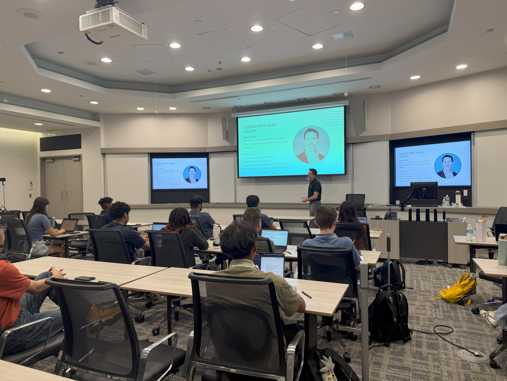

We meet every Tuesday from 5:30 PM to 6:45 PM, with dues of $45 for new members and $25 for returning members. Our meetings cover a variety of topics, including essential business concepts, guest speakers who share industry insights, and professional development activities aimed at building key skills. These sessions offer members the chance to engage in discussions, expand their knowledge, and network with peers. Through these meetings, BSC strives to foster both personal and professional growth in a collaborative environment.

We invite speakers each month to discuss business topics and share their experiences. These sessions provide valuable insights and opportunities for direct learning from industry professionals.
We also host speaker panels with multiple experts, allowing members to ask questions and engage with different perspectives.
BSC meetings feature engaging discussions on various business-related topics, allowing members to share ideas and perspectives. These discussions encourage critical thinking and help members stay informed on current trends in the business world.
We organize workshops focused on skill-building and professional development, where members can learn practical tools for success. These hands-on sessions provide valuable insight on LinkedIn, Resumes, Elevator Pitches, etc...